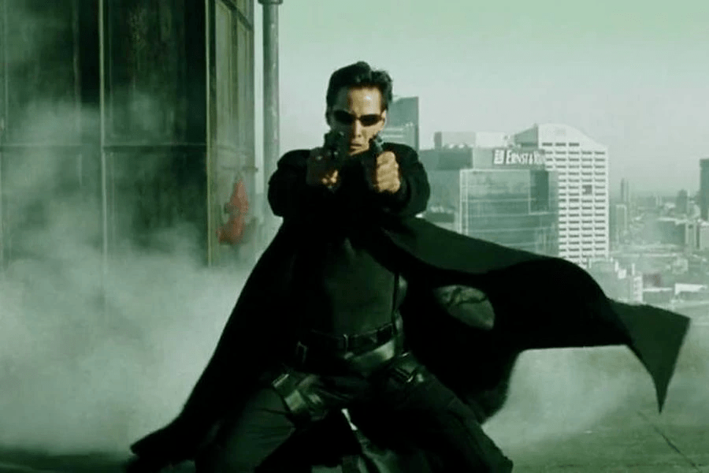

Agent Smith
The film follows Thomas Anderson, a programmer for a respectable software company who in the shadows is a famous hacker known as Neo and who throughout his life has been with the nagging feeling that something is not quite right.
Then everything changes for Neo when he meets Trinity and Morpheus, who invites Neo to learn the truth of what is going on, giving him the decision making in the mythical scene where he has to choose the blue pill or the red pill.
Taking the blue pill will allow Neo to wake up at home as if nothing had happened, while the red pill will reveal the truth about his reality.
Of course, Neo chooses the red pill (otherwise the movie would have ended after twenty minutes) and discovers that he is not actually living in the real world, but in a simulation recreating the planet in the year 1999 (what he believes to be his present) known as the Matrix.
